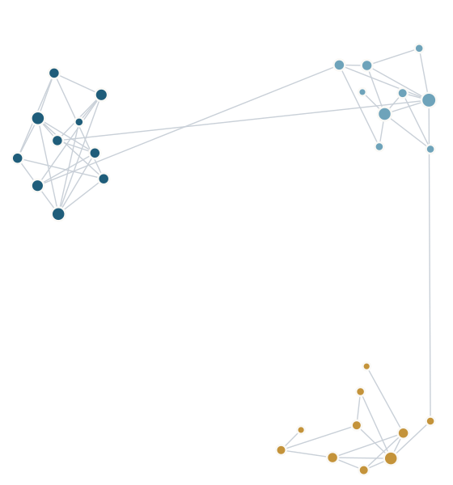

Statistics · Data Science
Maoyu Zhang
Postdoctoral Research Associate
Department of Statistics and Data Science
Washington University in St. Louis
On the 2026–2027 academic job market
I am a Postdoctoral Research Associate in the Department of Statistics and Data Science at Washington University in St. Louis, advised by Profs. Xuming He and Ying Wei.
My research focuses on the statistical analysis of networks, graphs, and tensor data, as well as debiased inference, with applications in business, neuroscience, and social science.
Previously, I was a Postdoctoral Research Associate in Information Systems & Operations Management (ISOM) at the Goizueta Business School of Emory University, where I was advised by Prof. Emma Jingfei Zhang.
I received my Ph.D. in Statistics from the Institute of Statistics and Big Data at Renmin University of China, where I was advised by Prof. Wenlin Dai. Prior to that, I received my B.S. in Mathematics and Applied Mathematics, and Economics from Central China Normal University.

Honors and awards
-
2025
ASA Student Paper Award
Business and Economic Statistics Section, for “Preferential Latent Space Models for Networks with Textual Edges”
-
2024
ASA Editors’ Choice Collection
“Fast Community Detection in Dynamic and Heterogeneous Networks,” Journal of Computational and Graphical Statistics
Research Interests
Methods for networks, graphs, and tensor data, and for debiased inference, with applications in business, neuroscience, and social science.
-
Networks and graphs
Community detection, dynamic network regression, and latent space models for networks with textual edges.
-
Tensor data analysis
Generalized tensor completion with non-random missingness.
-
Debiased inference
Distribution-informed prediction-powered inference, beyond point predictions.
-
Statistical depth
Depth for network-valued data; fast, robust location and scatter estimation.
-
Nonparametric statistics
Difference-based gradient estimation in nonparametric regression.
Publications
Papers under review
-
In revision
-
In revision
Preferential Latent Space Models for Networks with Textual Edges
2025 ASA Student Paper Award, Business and Economic Statistics Section
-
Under review
Published papers
-
2025
Multiplex depth for network-valued data and applications
Journal of Computational and Graphical Statistics, 34(4), 1625–1641
-
2024
Learning Brain Connectivity in Social Cognition with Dynamic Network Regression
Annals of Applied Statistics, 18(4), 3405–3424
-
2024
Fast robust location and scatter estimation: a depth-based method
Technometrics, 66(1), 14–27
-
2024
Fast Community Detection in Dynamic and Heterogeneous Networks
Journal of Computational and Graphical Statistics, 33(2), 487–500
2024 ASA Editors’ Choice Collection
-
2024
On difference-based gradient estimation in nonparametric regression
Statistical Analysis and Data Mining: The ASA Data Science Journal, 17(1), e11644
Experience & Education
Professional experience
-
Jan 2026 – Present
Washington University in St. Louis
Postdoctoral Research Associate, Department of Statistics and Data Science
Advisors: Xuming He and Ying Wei
-
Sep 2024 – Dec 2025
Emory University
Postdoctoral Research Associate, ISOM, Goizueta Business School
Advisor: Emma Jingfei Zhang
-
Apr 2023 – Aug 2024
Emory University
Research Scholar, ISOM, Goizueta Business School
Advisor: Emma Jingfei Zhang
Education
-
2019 – 2024
Renmin University of China
Ph.D. in Statistics, Institute of Statistics and Big Data
Advisor: Wenlin Dai
-
2015 – 2019
Central China Normal University
B.S. in Mathematics and Applied Mathematics, and Economics
Contact
Office
Department of Statistics and Data ScienceWashington University in St. Louis
1 Brookings Drive
St. Louis, MO 63130